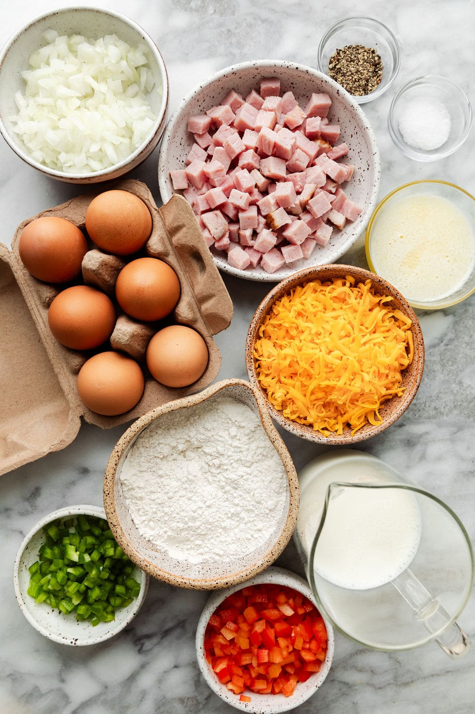
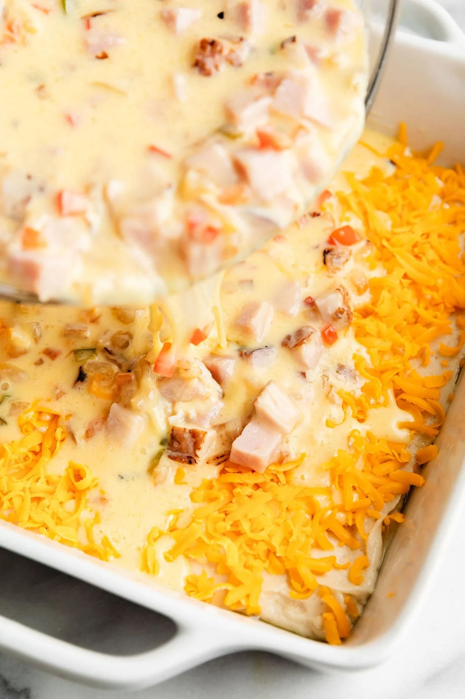
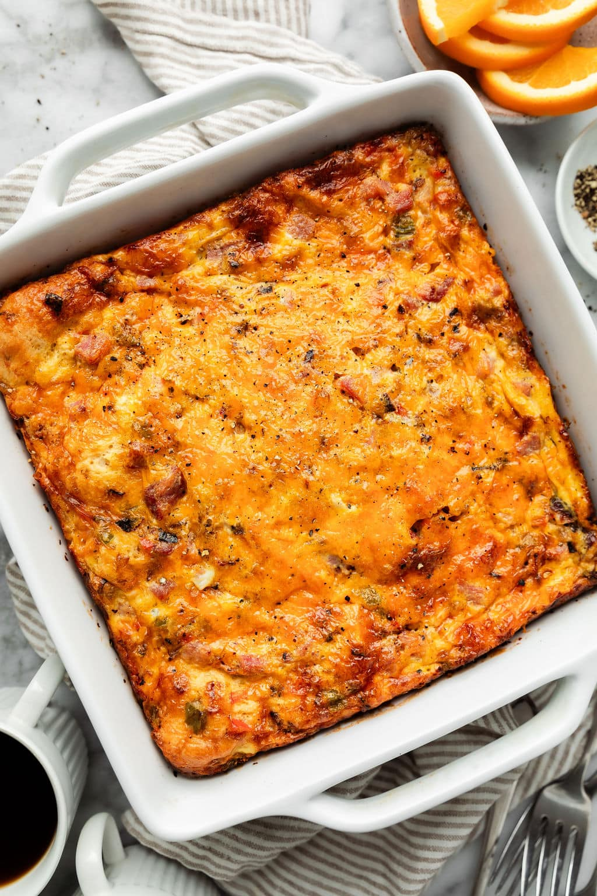

Ingredients
Directions
- Preheat oven and prep the dish: Generously grease the bottom and sides of a 2 1/2-quart casserole dish (or 9-inch casserole dish) with butter and set aside. This will make it easy to remove every bit of delicious breakfast casserole from the dish (and easier cleanup, too!)
- Stir the base mixture: Combine the flour, baking powder, salt, milk, melted butter, and an egg in a large bowl. Pour the batter into the prepared baking dish, then sprinkle the batter with cheese.
- Make the egg mixture: Saute the onions and pepper in a little butter until they start to get tender. To the bowl that you used for the batter, add the remaining eggs, milk, and melted butter. Stir in the sautéed veggies and diced ham, then pour this mixture over the batter in the baking dish.
- Bake the egg casserole: Sprinkle the remaining cheese over top and bake until the edges are golden brown and a toothpick inserted in the center comes out clean. Remove from the oven and cool 5 minutes before serving with toppings.